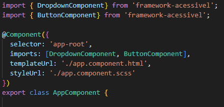

Esta biblioteca oferece uma coleção de componentes web acessíveis desenvolvidos com Angular, com o objetivo de tornar a web mais inclusiva e utilizável para todas as pessoas.
Seguindo as diretrizes da WCAG 2.1 e 2.2, todos os componentes foram projetados para garantir:
ariaO uso desses componentes reduz a complexidade técnica e promove o cumprimento da Lei Brasileira de Inclusão (LBI), incentivando a responsabilidade digital e a inclusão real no desenvolvimento web.
O componente <accessible-input> é um campo de entrada de texto com suporte completo a acessibilidade: foco visível, rótulo interpretável por leitores de tela (aria-label), contraste adequado e mensagens de erro.
| Parâmetro | Tipo | Descrição |
|---|---|---|
label | string | Texto descritivo exibido ou lido pelo leitor de tela |
type | string | Tipo do input |
aria-required | boolean | Indica que o campo é obrigatório |
ariaLabel | string | Texto alternativo lido por tecnologias assistivas |
id | string | Identificador único do campo |
placeholder | string | Texto exibido como dica no campo |
[(modelValue)] | any | Ligação bidirecional com a propriedade no componente |
<accessible-input
[(modelValue)]="user.name"
type ="name"
id="nome"
label="Nome completo"
ariaLabel="Nome completo"
placeholder="Digite seu nome"
aria-required="true">
</accessible-input>
<span *ngIf="user.name === ''" id="erro" class="erro">Campo obrigatório</span>
O componente <lib-modal> exibe uma janela modal acessível que respeita as diretrizes de usabilidade e acessibilidade: foco preso enquanto estiver aberta, fechamento via Esc e leitura correta por leitores de tela.
| Parâmetro | Tipo | Descrição |
|---|---|---|
aberto | boolean | Define se o modal está visível ou não |
titulo | string | Título descritivo exibido no cabeçalho do modal |
descricao | string | Descrição do modal |
| Evento | Descrição |
|---|---|
(fechado) | Emitido quando o modal é fechado pelo usuário |
Html
<accessible-button
label="Abrir Modal"
ariaLabel="Botão para abrir Modal"
(onClick)="openModal()">
</accessible-button>
<lib-modal
[aberto]="modalOpen"
[titulo]="'Atenção!'"
[descricao]="'Descrição do modal'"
(fechado)="closeModal()">
<p>Conteúdo do modal.</p>
</lib-modal>
Typescrypt
openModal() {
this.modalOpen = true;
}
closeModal() {
this.modalOpen = false;
}
O componente <accessible-table> apresenta dados tabulares de forma acessível, utilizando marcação semântica adequada, legenda descritiva e suporte a tecnologias assistivas como leitores de tela.
| Parâmetro | Tipo | Descrição |
|---|---|---|
caption | string | Texto descritivo que serve como legenda da tabela |
headers | string[] | Lista com os rótulos dos cabeçalhos de coluna |
data | any[][] | Matriz com os dados da tabela (linhas e colunas) |
Html
<accessible-table
[caption]="'Lista de Usuários'"
[headers]="headers"
[data]="tableData">
</accessible-table>
Typescript
headers = ['Nome', 'Email', 'Status'];
tableData = [
['João Silva', 'joao@email.com', 'Ativo'],
['Maria Souza', 'maria@email.com', 'Inativo'],
['Carlos Lima', 'carlos@email.com', 'Ativo']
];
| Nome | Status | |
|---|---|---|
| João Silva | joao@email.com | Ativo |
| Maria Souza | maria@email.com | Inativo |
| Carlos Lima | carlos@email.com | Ativo |
<caption> O componente <accessible-select> oferece uma interface acessível para seleção de opções, garantindo foco visível, semântica apropriada e compatibilidade com leitores de tela via atributos ARIA.
| Parâmetro | Tipo | Descrição |
|---|---|---|
label | string | Rótulo visível e descritivo para o campo de seleção |
id | string | Identificador único do campo (usado para vínculo com o label) |
options | string[] | Lista de opções disponíveis para escolha |
selected | string | Valor atualmente selecionado |
| Evento | Descrição |
|---|---|
(selected) | Emitido ao alterar a seleção no campo |
Html
<accessible-select
[label]="'Status do usuário'"
[id]="'status-select'"
[options]="statusOptions"
[(selected)]="selectStatus">
</accessible-select>
Typescript
statusOptions = [
{ label: 'Ativo', value: 'Ativo' },
{ label: 'Inativo', value: 'Inativo' },
{ label: 'Pendente', value: 'Pendente' }
];
Status selecionado:
O componente <accessible-alert-list> exibe uma lista dinâmica de mensagens de alerta, utilizando ARIA live regions para leitura automática por leitores de tela, garantindo acessibilidade em notificações em tempo real.
| Parâmetro | Tipo | Descrição |
|---|---|---|
messages | string[] | Lista de mensagens de alerta exibidas |
| Evento | Descrição |
|---|---|
(dismiss) | Emitido quando o usuário remove um alerta da lista |
Html
<accessible-alert-list
[messages]="alerts"
(dismiss)="removeAlert($event)">
</accessible-alert-list>
Ou
<warning-alert-list
[messages]="alerts"
(dismiss)="removeAlert($event)">
</warning-alert-list>
Typescript
alerts = [
{ id: 1, text: 'Bem-vindo!', ativo: true }
];
O componente <accessible-collapse> permite esconder e revelar conteúdo de forma acessível, com suporte completo à navegação por teclado e leitura correta por tecnologias assistivas como leitores de tela.
| Parâmetro | Tipo | Descrição |
|---|---|---|
titulo | string | Texto visível no cabeçalho do componente |
<accessible-collapse titulo="Clique para expandir">
<p>Este é o conteúdo colapsável. Pode conter texto, listas, imagens, etc.</p>
</accessible-collapse>
Este é o conteúdo colapsável. Pode conter texto, listas, imagens, etc.
aria-expanded e aria-controls para indicar o estado O componente <accessible-dropdown> exibe um menu suspenso acessível, com suporte completo à navegação por teclado, foco visível e leitura adequada por tecnologias assistivas utilizando atributos ARIA.
| Parâmetro | Tipo | Descrição |
|---|---|---|
label | string | Rótulo descritivo do campo (visível e acessível) |
options | string[] | Lista de opções exibidas no dropdown |
| Evento | Tipo | Descrição |
|---|---|---|
(selected) | string | Emitido ao selecionar uma opção |
Html
<accessible-dropdown
[label]="'Options'"
[options]="menuOptions"
(selected)="selectOption($event)">
</accessible-dropdown>
Typescript
menuOptions = ['Perfil', 'Configurações', 'Sair'];
aria-expanded, aria-activedescendant e role="listbox" O componente <lib-accessible-image> exibe uma imagem de forma responsiva e acessível, garantindo compatibilidade com leitores de tela e boa usabilidade em dispositivos móveis.
| Parâmetro | Tipo | Descrição |
|---|---|---|
src | string | Caminho da imagem |
alt | string | Texto alternativo (acessibilidade) |
maxWidth | string | Largura máxima (ex: "400px", "100%") |
showCaption | boolean | Exibe o alt como legenda visível |
rounded | boolean | Aplica bordas arredondadas e borda fina |
<lib-responsive-image
src="imgs/exemplo.png"
alt="Descrição da imagem"
aria-describedby="Descrição detalhada quando necessário."
maxWidth="500px"
[rounded]="true">
</lib-responsive-image>
Para adicionar a biblioteca do Framework Acessível ao seu projeto Angular, execute o comando abaixo no terminal:
npm install framework-acessivel
Importe o módulo do componente necessário no seu AppComponent ou outro component desejado:
 Com o módulo importado, você pode utilizar os componentes diretamente nos templates Angular. Basta configurar os inputs e outputs conforme necessário. Veja um exemplo de uso com o Botão Acessível:
Se este projeto te ajuda, considere fazer uma doação para apoiar o desenvolvimento.